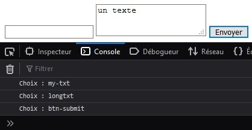
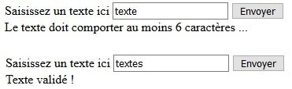
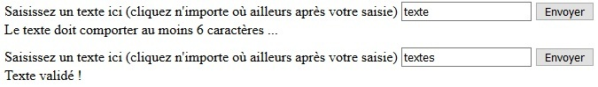

Une seule règle d'or, ne jamais faire confiance à l'utilisateur. En d'autres termes, vérifiez toujours les données saisies par l'utilisateur avant qu’elles ne soient traitées.
Lors du clic sur le bouton pour soumettre le formulaire, les données sont envoyées à la ressource indiquée dans l'attribut action de la balise <form>.
Nous allons voir comment intercepter les données et valider ou invalider le formulaire.
Avant d'être réellement soumis au serveur, un événement de type submit est déclenché sur l'élément du DOM correspondant au formulaire. Nous pourrons le capter en ajoutant un événement et ainsi accéder aux données du formulaire.
À partir de ce moment, la balle est dans notre camp. Nous pourrons interdire certaines saisies, suggérer des données à saisir, informer sur les données attendues ou bien plus encore selon nos besoins.
See the Pen Untitled by OpenSpirit (@OpenSpirit) on CodePen.
L'interface Event représente un événement qui se produit dans le DOM. Une fois la méthode preventDefault() rattachée à cet événement, elle indique que l’action par défaut ne pourra pas être exécutée.
Exemple : la redirection après le clic d’un utilisateur sur un élément <a> peut être annulée grâce à la méthode preventDefault() appliquée à l’événement.
L'objet formulaire du DOM possède une propriété elements qui représente l'ensemble des champs de saisie sous forme d'un tableau. Ces éléments possèdent eux-mêmes des propriétés pour identifier les champs du formulaire :
See the Pen Untitled by OpenSpirit (@OpenSpirit) on CodePen.
Pour optimiser notre code, nous pouvons ici, par exemple, parcourir les éléments du tableau elements en utilisant des structures itératives de type for couplées à des structures conditionnelles de type if ou switch/case.
Le formulaire envoyé donne lieu au déclenchement d'un événement de type submit.
See the Pen Untitled by OpenSpirit (@OpenSpirit) on CodePen.
L'événement submit n'est là que pour nous permettre d'accéder aux éléments de notre formulaire. Une fois nos vérifications faites, nous pourrons stopper la soumission du formulaire en invoquant la méthode preventDefault() de l'objet Event.
Si cette dernière n'est pas appelée, nos traitements seront appliqués, puis notre formulaire envoyé au serveur.
L'objet formulaire du DOM possède une méthode submit() que nous pouvons appeler pour soumettre un formulaire, couplée à un événement click sur un bouton, par exemple. Toutefois, avec cette méthode, aucun événement submit ne sera déclenché et les différentes contraintes de validation (required, pattern, min, etc.) que nous aurions pu mettre en place directement au niveau des champs de notre formulaire ne seront pas exécutées. Nous devrons réaliser toute la validation à la main.
Nous pourrons ainsi gérer des erreurs de saisie avant que le formulaire ne soit envoyé au serveur. Cela évitera la perte des données du formulaire pour l'utilisateur et des allers-retours inutiles pour le serveur.
Nous utiliserons ici l'écouteur d'événements input. Il sera déclenché à chaque modification de la valeur saisie.
See the Pen Untitled by OpenSpirit (@OpenSpirit) on CodePen.
La méthode sera sensiblement identique, seul l'écouteur d'événements sera différent. Nous utiliserons ici blur.
See the Pen Untitled by OpenSpirit (@OpenSpirit) on CodePen.
